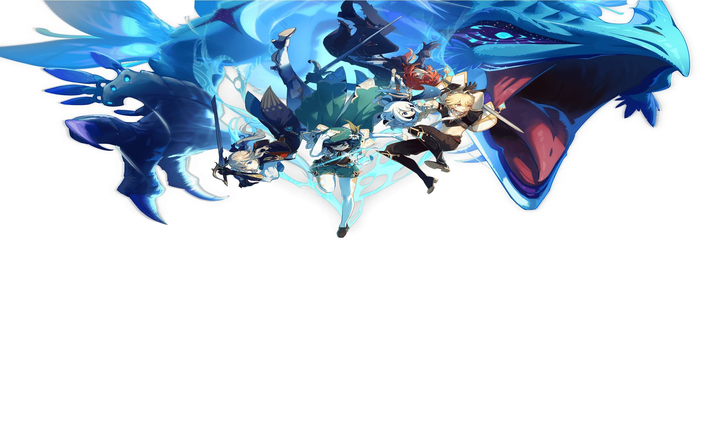

问答
问:PC的推荐配置？
答:推荐配置：
操作系统：Windows 7 SP1 64-bit、Windows 8.1 64-bit或Windows 10 64-bit（目前不支持Windows 10开发版）。
处理器：英特尔酷睿i7或同类产品
内存：16 GB
显卡：NVIDIA® GeForce® GTX 1060 6GB或更高版本
DirectX版本：11
存储空间：30GB可用存储空间
问:当我启动游戏时，我显示这个错误："该文件的版本与您所运行的Windows版本不兼容。"
答:请确认您的Windows操作系统是否满足系统兼容性要求。如果您的系统配置太低，您可能无法安装或启动游戏。您还可能会出现黑屏和无响应的情况。
问:打开游戏后，游戏的主菜单显示不正确。(如：游戏页面不能完全显示)
答:右击原神桌面图标，选择 "兼容性">"更改高DPI设置"，并勾选 "替换高DPI缩放行为"，选择下方的 "系统"，应用你的设置后，重启游戏即可恢复正常显示功能。
问:当我更新游戏时，我得到以下信息： "磁盘空间不足"。
答:请确保您安装游戏的硬盘有足够的空间。如果剩余空间不超过30GB，建议您先删除一些文件，再重新打开游戏，再次更新游戏。
无边框窗口化解决方案第一步
按Win+R打开运行，输入regedit，确定，进入注册表编辑器
在（可能有大小写不同）计算机\HKEY_CURRENT_USER\SOFT
WARE\miHoYo\原神下找到Screenmanager Is Fullscreen
mode_*****
双击打开，改成0
另外的两个Height和Width即保存着窗口的长和宽，如果想要修改的话记得选择十进制。
无边框窗口化解决方案第二步
找到游戏安装路径，例如：（游戏本体，不是启动器）
D:\Genshin Impact\Genshin Impact Game\YuanShen.exe
右键->发送到->桌面快捷方式
随后右键桌面上的快捷方式，在目标栏的最后面（双引号的后面），输入
-popupwindow
注意前面有个空格
用这个快捷方式启动原神即可。
现在在前台呼出弹窗就不会把原神切到后台去了，部分窗口置顶的插件等也可以显示了。